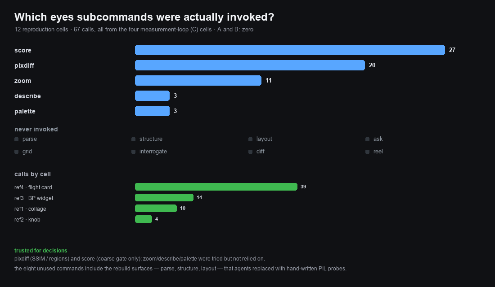

eyes did the agents actually use?Audit of the A/B/C reproduction run (ab_runs/). Sources: the four C agents'
per-turn tool logs (self-reported after the run), the four B agents' logs, and
artifact inspection. Counts are approximate where the agent said "approx".

Twelve cells, four sensing modes, 67 eyes invocations total — and every one
of them came from the four C cells. The B cells, which received the
interrogate sheet, ran zero eyes commands: they read facts.json once
and then built their own measurement rigs. A and the clean pair also ran zero.
Across 13 CLI subcommands, the agents used five (plus --help): score,
pixdiff, zoom, describe, palette. The other eight — parse, structure,
layout, ask, grid, interrogate, diff, reel — were never invoked.
| arm | cells | eyes calls |
what it actually consumed |
|---|---|---|---|
| A · vision only | 4 | 0 | crops / grid overlays only |
| B · facts | 4 | 0 | facts.json once, then self-built measurement |
C · eyes loop |
4 | 67 | score/pixdiff mostly; zoom/describe/palette partly |
| A2/B2 · clean pair | 4 | 0 | full-image vision (+ facts in B2) |
| cell | --help |
score |
pixdiff |
zoom |
describe |
palette |
everything else |
|---|---|---|---|---|---|---|---|
| C/ref1 collage | 1 | 7 | 2 | 0 | 0 | 0 | 0 |
| C/ref2 knob | 1 | 3 | 0 | 0 | 0 | 0 | 0 |
| C/ref3 BP | 1 | 4 | 2 | 4 | 1 | 2 | 0 |
| C/ref4 flight | 0 | 13 | 16 | 7 | 2 | 1 | 0 |
| total | 3 | 27 | 20 | 11 | 3 | 3 | 0 |
Usable signal (by the agents' own judgement): score 27/27 returned, but only
as a coarse gate; pixdiff 20/20; zoom 11 calls of which 2 aborted and 2 had
unusable analysis; describe 3 of 3 unusable; palette 3 calls of which 2
failed on the flag and 1 succeeded.
pixdiff is the workhorse. Every C agent that used it treated
ssim_mean / mismatch_frac / hot regions as the truth signal:
ssim_mean 0.783 → 0.904 and the hottest-region list,
which pointed me at the dot band".score is a gate, not an objective. All four C agents used it for a
regression number and component breakdown, and all four said it was too noisy to
optimize against. Two concrete reasons, both documented in
REPORT.md:
zoom is useful when it works. C/ref4 used 7 crops for letterforms and the
airplane; C/ref3 had 2 of 4 abort and the --analyze describe bboxes come back
mis-scaled.
describe, palette — tried, then abandoned. C/ref3 called describe once
and called it "unusable … bboxes at ~3× scale and with nonsense regions". The
cause is real: describe/parse emit Mirage's normalized [0,1000]
coordinates, while zoom --bbox takes source pixels. On a 400×155 image,
117 means 47px, not 117px — a 3.4× error if read as pixels. C/ref4's
palette call failed because the CLI accepts -n, not --n.
| # | friction | evidence | fix |
|---|---|---|---|
| 1 | describe/parse bboxes are [0,1000] but zoom bboxes are px; no unit marker in the record |
C/ref3, C/ref4 both misread them | add bbox_px alongside, or a units field; label in --help |
| 2 | palette --n rejected (only -n) |
C/ref3, C/ref4 | accept --n as an alias |
| 3 | describe --json is not a flag (JSON is already default) |
this audit | document, or accept it idempotently |
| 4 | zoom default writes next to the input; one agent hit a read-only /tmp |
C/ref3 | accept --out (it does) and document it |
| 5 | no primitive for "measure this ink box / radius / gradient / edge" | all four C agents wrote their own PIL scanners (100+ probes) | add a measure surface (below) |
| 6 | score is presented as a fidelity score |
C/ref4's composite fell while SSIM rose | rename to semantic, or print ssim_mean beside it |
The B agents — which had no tools — wrote the measurement layer themselves. This is the strongest signal in the audit: the missing product is not more description, it is primitives.
| primitive | who | how it was used |
|---|---|---|
| background-difference mask + run-lengths | B/ref1, B/ref2, C/ref1 | exact card/plate boxes |
| row-projection ink bands | B/ref1, B/ref3, B/ref4 | every text line's top/bottom |
| column projection / threshold ladder | B/ref1, B/ref3 | ink x-extents, blur-vs-weight separation |
| ink-flux (Σ brightness) | B/ref3, B/ref4, C/ref3, C/ref4 | blur-invariant weight/colour calibration |
| 50% edge crossing / sub-pixel fit | C/ref3, C/ref4, B/ref4 | card edges, bar caps, bead diameter |
| corner chord / circle fit | B/ref1, B/ref4, C/ref1 | radii (27, 35.5, 37.5, 40px) |
| flood-fill + ray-march silhouette → Catmull-Rom | B/ref2, C/ref2 | non-rectangular keycap silhouettes |
| scanline gradient stops | B/ref1, C/ref1 | 16–21-stop CSS gradients |
| radial falloff → gradient stops | B/ref3, C/ref3 | bead glow |
| dot-lattice fitting + NMS | B/ref2, B/ref4, C/ref2, C/ref3 | speaker glyphs, 21-column waveform |
FreeType / measureText font fitting |
B/ref1, B/ref3, B/ref4, C/ref1, C/ref3 | font family/size/weight |
| aligned shift search before scoring | C/ref3 | stops 1px offsets masquerading as shape errors |
| region-decomposed RMSE/MAE | B/ref4, C/ref3, C/ref4 | where to spend the next cycle |
| blur-signature sweep | C/ref4 | discovered Chromium quantizes blur <0.75px to 0 |
| ASCII luminance map | B/ref2, B/ref4, C/ref4 | read structure in near-black UI |
The narrow usage is not a failure of the agents; it is the shape of the task. For screenshot→HTML the loop needs a ruler and a locator, and the agents improvised both. The product opportunity is to make those primitives callable so they are not re-derived per agent and are comparable across runs:
eyes measure <img> --json returning, per element: bbox_px, ink_bbox,
edge_crossings, radius, gradient_stops, ink_mass, font_metrics,
blur_sigma, dot_lattice. Units always px; include the normalized values
only as a secondary field.parse the rebuild default (it already has the element boxes) and
say so in RUNBOOK.md; today not one agent invoked it.semantic from pixel: eyes semantic (old score) and
eyes pixel (pixdiff), with ssim_mean first in the report. Keep the
composite for QA questions, not for optimization.--n, --json on every subcommand, explicit units,
zoom --analyze coordinate fix.The one-line finding: eyes was used as a thermometer and a map
(score, pixdiff); its rulers and calipers (parse, structure, layout)
went untouched, and every agent built those calipers by hand.
TOOL_USAGE.md · regenerate with
uv run --with markdown python ab_runs/render_reports.py